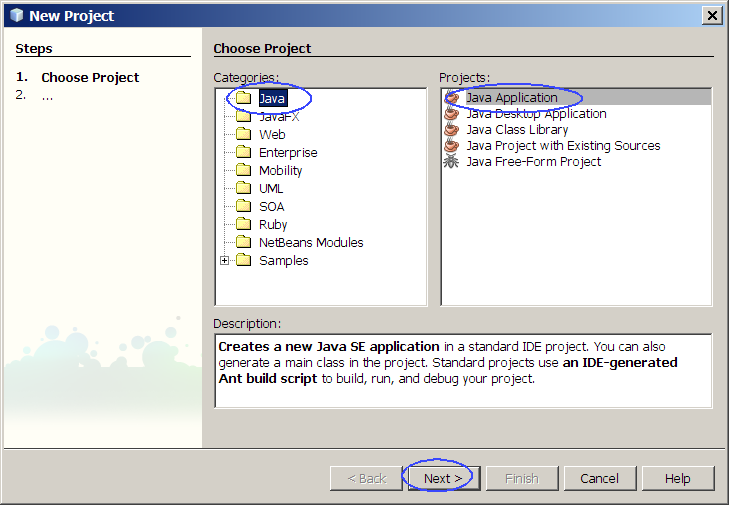
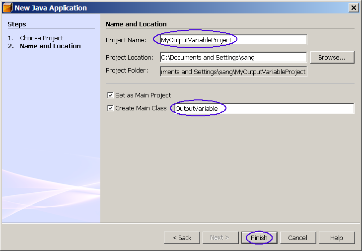
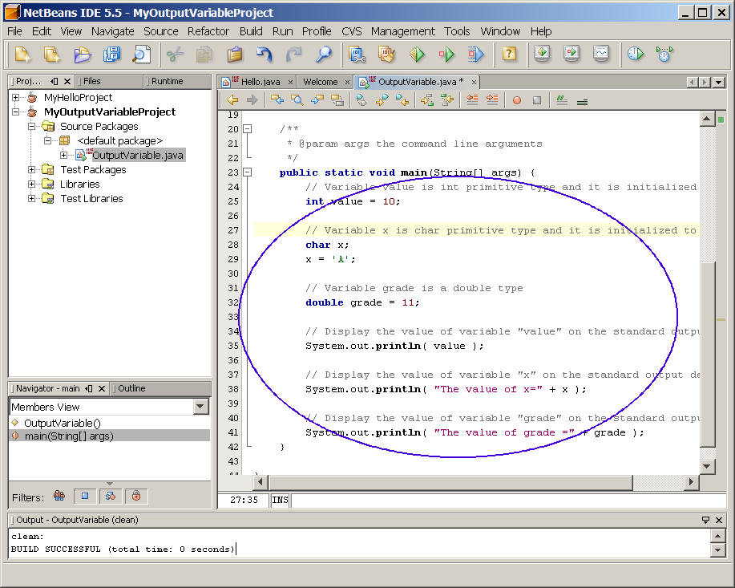
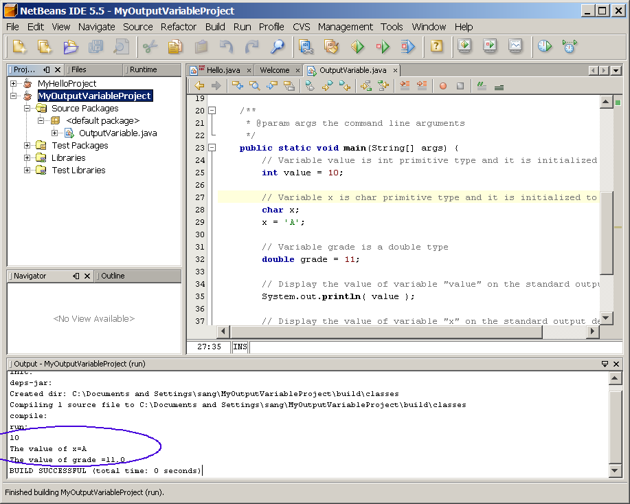
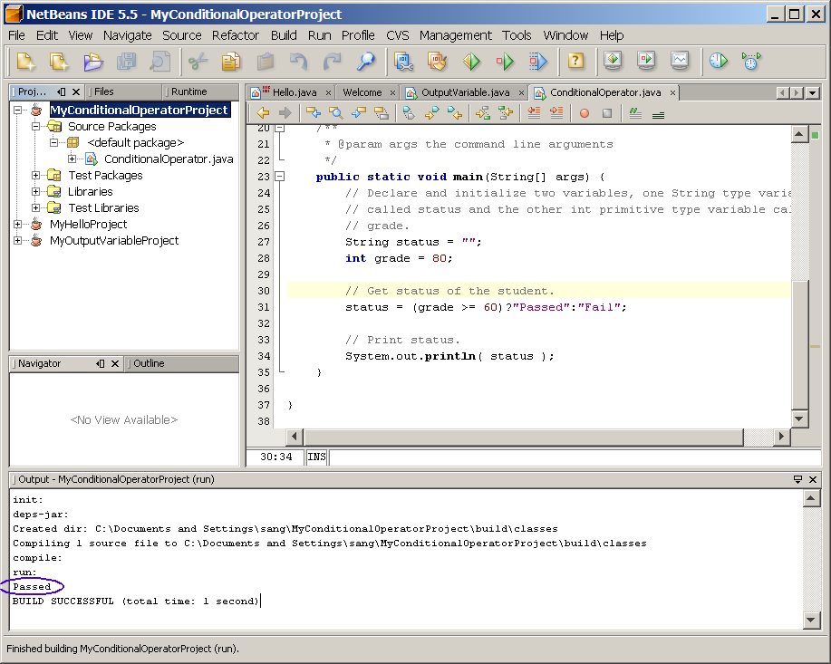
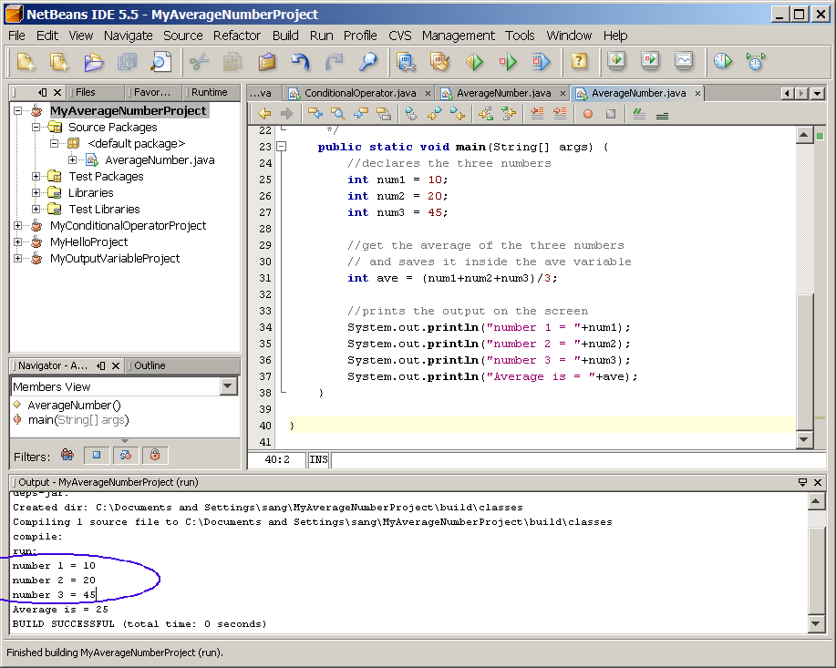
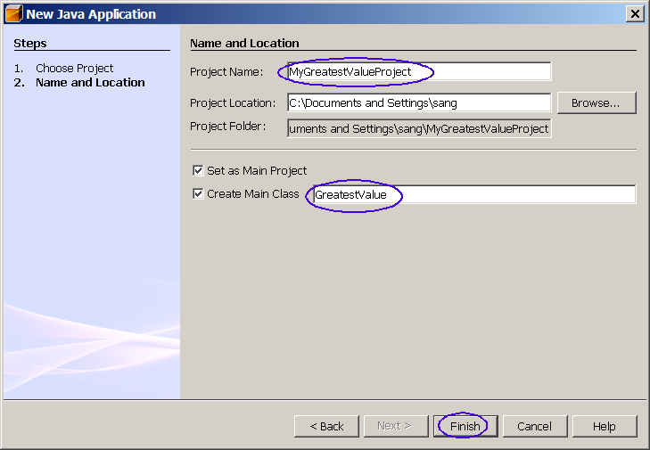

Java Programming Basics

The goal of this hands-on lab is to get
you exposed to the Java
programming basics, such as how to declare and use variables, how to
use conditional operators.
Expected duration: 100 minutes
Change Log
- Jan. 19th, 2007: Created
- Aug. 1st, 2009: Updated with slight cosmetic changes
Lab Exercises
Exercise 1: Declare, Initialize, Print
variables
In this exercise, you are going to learn how to declare,
initialize a variable. You also learn how to modify and display a
value of a variable.
(1.1)
Build and run OutputVariable Java program using NetBeans IDE
0. Start the NetBeans IDE if you have
not done so.
1. Create a NetBeans project
- Select File from
top-level menu and
select New Project.
- Observe that the New Project
dialog box appears.
- Select Java under Categories section and Java Application under Projects section.
- Click Next.

- Under Name
and Location pane, for the Project
Name field, enter MyOutputVariableProject.
This is the name you are giving to the newly createdly NetBeans project.
- For the Create Main Class
field, enter OutputVariable.
(Figure-1.10 below) This is to create OutVariable.java, in which main(..)
method will be created for you.
- Click Finish.

Figure-1.10: Create OutVariable project
- Observe that the MyOutputVariableProject
project node is created
under Projects pane of the
NetBeans IDE and IDE generated OutputVariable.java
is displayed in the
editor window of the IDE.
2. Modify the IDE generated
OutputVariable.java.
- Modify the OutputVariable.java
as
shown in Code-1.11 and Figure-1.12 below. The code fragments that need
to be added are highlighted in bold and blue-colored font.
/*
* OutputVariable.java
*
* Created on January 19, 2007, 6:30 PM
*
* To change this template, choose Tools | Template Manager
* and open the template in the editor.
*/
/**
*
* @author sang
*/
public class OutputVariable {
/**
* @param args the command line arguments
*/
public static void main(String[] args) {
// Variable value is int
primitive type and it is initialized to 10
int value = 10;
// Variable x is char
primitive type and it is initialized to 'A'
char x;
x = 'A';
// Variable grade is a double type
double grade = 11;
// Display the value of
variable "value" on the standard output device
System.out.println( value );
// Display the value of
variable "x" on the standard output device
System.out.println( "The
value of x=" + x );
// Display the value of variable "grade" on the standard output device
System.out.println( "The value of grade =" + grade );
}
}
|
Code-1.11: Modified OutputVariable.java

Figure-1.12: Modified OutputVariable.java
3. Build and run the program
- Right click MyOutputVariableProject
and select Run.
- Observe the result in the Output
window of the NetBeans IDE.
(Figure-1.13 below)

Figure-1.13: Result of running OutputVariable program
return to top of
the exercise
(1.2)
Build and run OutputVariable Java program using "javac" compiler and
"java"
1. Go to a directory where you are going
to
write Java programs
C:\>cd \myjavaprograms
2. Write OutputVariable.java
using
your editor of choice (in this example, I am using jedit) as shown in Code-1.20
below.
C:\myjavaprograms>jedit OutputVariable.java
public class OutputVariable {
public static void main( String[] args ){
// Variable value is int
primitive type and it is initialized to 10
int value = 10;
// Variable x is char
primitive type and it is initialized to 'A'
char x;
x = 'A';
// Display the value of
variable "value" on the standard output device
System.out.println( value );
// Display the value of
variable "x" on the standard output device
System.out.println( "The
value of x=" + x );
}
} |
Code-1.20: OutputVariable.java
3. Compile
OutputVariable.java
using
javac
compiler. The
javac compiler
comes with J2SE SDK you've download. It resides in
%JAVA_HOME%\bin (Windows) or
$JAVA_HOME/bin (Solaris/Linux)
directory. The result of compilation will be the creation of
OutputVariable.class file.
C:\myjavaprograms>javac OutputVariable.java
4. Run the
OutputVariable program
using
java command.
The
java command starts the
Java Virtual Machine and runs the
OutputVariable
program in this example. A Java program can be made of multiple
Java classes and and a set of libraries. In this example, the
OutputVariable program just contains a single class called
OutputVariable.class. You can
regard the
java command as
Java interpreter.
C:\myjavaprograms>java OutputVariable
10
The value of x=A
7. Modify
OutputVariable.java
as shown in Code-1.21 below. You
are modifying it to add double type variable called grade and displays
the value of it. The code fragments that need to be added are
highlighted in
bold and
blue-colored font.
public class OutputVariable {
public static void main( String[] args ){
// Variable value is int
primitive type and it is initialized to 10
int value = 10;
// Variable x is char
primitive type and it is initialized to 'A'
char x;
x = 'A';
// Variable grade is a double type
double grade = 11;
// Display the value of
variable "value" on the standard output device
System.out.println( value );
// Display the value of
variable "x" on the standard output device
System.out.println( "The
value of x=" + x );
// Display the value of
variable "grade" on the standard output device
System.out.println( "The value of grade =" + grade );
}
} |
Code-1.21: Modified OutputVariable.java
8. Compile and run the program. Observe that new message is displayed.
C:\myjavaprograms>javac OutputVariable.java
C:\myjavaprograms>java
OutputVariable
10
The value of x=A
The value of grade =11.0
return to top of
the exercise
Summary
In this exercise, you have built and run
OutputVariable Java program using javac compiler and java
command and NetBeans IDE.
Return
to the top
Exercise 2: Conditional operator
In this exercise, you are going to write
a Java program which uses
conditional operators.
- Build and run a Java program that uses conditional
operators
(2.1)
Build and run a Java program that uses conditional operators
1. Create a NetBeans project
- Select File from
top-level menu and
select New Project.
- Observe that the New Project
dialog box appears.
- Select Java under Categories section and Java Application under Projects section.
- Click Next.
- Under Name
and Location pane, for the Project
Name field, enter MyConditionalOperatorProject.
- For the Create Main Class
field, enter ConditionalOperator.
(Figure-1.20 below)
- Click Finish.
- Observe that the MyConditionalOperatorProject
project node is created
under Projects pane of the
NetBeans IDE and IDE generated ConditionalOperator.java
is displayed in the editor window of the IDE.
2. Modify the IDE generated ConditionalOperator.java.
- Modify the ConditionalOperator.java
as
shown in Code-2.21 below. The code fragments that need
to be added are highlighted in bold and blue-colored font.
public class ConditionalOperator
{
/** Creates a new instance of ConditionalOperator */
public ConditionalOperator() {
}
/**
* @param args the command line arguments
*/
public static void main(String[] args) {
// Declare and initialize
two variables, one String type variable
// called status and the
other int primitive type variable called
// grade.
String status = "";
int grade = 80;
// Get status of the student.
status = (grade >=
60)?"Passed":"Fail";
// Print status.
System.out.println( status );
}
}
|
Code-2.21: Modified ConditionalOperator.java
3. Build and run the program
- Right click MyConditionalOperatorProject
and select Run.
- Observe the result in the Output
window of the NetBeans IDE.
(Figure-2.22 below)

Figure-2.22: Result of running the program
4. Modify ConditionalOperator.java
as adding the following lines of code at the appropriate place, build
and run the program
- int salary = 100000;
- Print "You are rich!" if the salary is over 50000. Print "You are
poor!" otherwise.
Summary
In this exercise, you have built
and run a Java application using NetBeans IDE.
return to the top
Exercise 3: Averaging numbers
In this exercise, you are going to build
and run a sample Java
program in which an average of numbers are computed and displayed.
- Build and run a Java program
(3.1)
Build and run a Java program
1. Create a NetBeans project
- Select File from
top-level menu and
select New Project.
- Observe that the New Project
dialog box appears.
- Select Java under Categories section and Java Application under Projects section.
- Click Next.
- Under Name
and Location pane, for the Project
Name field, enter MyAverageNumberProject.
- For the Create Main Class
field, enter AverageNumber.
- Click Finish.
- Observe that the MyAverageNumberProject
project node is created
under Projects pane of the
NetBeans IDE and IDE generated AverageNumber.java
is displayed in the editor window of the IDE.
2. Modify the IDE generated AverageNumber.java.
- Modify the AverageNumber.java
as
shown in Code-3.11 below. The code fragments that need
to be added are highlighted in bold and blue-colored font.
public class AverageNumber {
/** Creates a new instance of AverageNumber */
public AverageNumber() {
}
/**
* @param args the command line arguments
*/
public static void main(String[] args) {
//declares the three numbers
int num1 = 10;
int num2 = 20;
int num3 = 45;
//get the average of the three numbers
// and saves it inside the ave variable
int ave = (num1+num2+num3)/3;
//prints the output on the screen
System.out.println("number 1 = "+num1);
System.out.println("number 2 = "+num2);
System.out.println("number 3 = "+num3);
System.out.println("Average is = "+ave);
}
}
|
Code-3.11: Modified AverageNumber.java
3. Build and run the program
- Right click MyAverageNumberProject
and select Run.
- Observe the result in the Output window of the NetBeans IDE.
(Figure-3.12 below)

Figure-3.12: Result of running AverageNumber program
return to
the top
Exercise 4: Find greatest number
In this exercise, you are going to write
a Java program which uses
conditional operators.
- Build and run a Java program that uses
conditional operators
(4.1)
Build and run a Java program that uses conditional operators
1. Create a NetBeans project
- Select File from
top-level menu and
select New Project.
- Observe that the New Project
dialog box appears.
- Select Java under Categories section and Java Application under Projects section.
- Click Next.
- Under Name
and Location pane, for the Project
Name field, enter MyGreatestValueProject.
- For the Create Main Class
field, enter GreatestValue.
(Figure-4.10 below)
- Click Finish.

Figure-4.10: Create MyGreatestValueProject
- Observe that the MyGreatestValueProject
project node is created
under Projects pane of the
NetBeans IDE and IDE generated GreatestValue.java
is displayed in the editor window of the IDE.
2. Modify the IDE generated GreatestValue.java.
- Modify the GreatestValue.java
as
shown in Code-4.11 below. The code fragments that need
to be added are highlighted in bold and blue-colored font.
public class GreatestValue {
/** Creates a new instance of GreatestValue */
public GreatestValue() {
}
/**
* @param args the command line arguments
*/
public static void main(String[] args) {
//declares the numbers
int num1 = 10;
int num2 = 23;
int num3 = 5;
int max = 0;
//determines the highest number
max = (num1>num2)?num1:num2;
max = (max>num3)?max:num3;
//prints the output on the screen
System.out.println("number 1 = "+num1);
System.out.println("number 2 = "+num2);
System.out.println("number 3 = "+num3);
System.out.println("The highest number is = "+max);
}
}
|
Code-4.11: Modified GreatestValue.java
3. Build and run the program
- Right click MyGreatestValueProject
and select Run.
- Observe the result in the Output window of the NetBeans IDE.
(Figure-4.12 below)
Homework
exercise (for people who
are taking Sang Shin's "Java Programming online course")
1. The homework is to modify the MyGreatestValueProject project
above.
(You might want to create a
new project by copying
the MyGreatestValueProject
project.)
You can name the new project in any way you want but here I am going to
call to call it as MyGreatestValueProject2.
- Compute
the smallest number and display it (as you did compute and display
greatest number)
- If the smallest number is less than 10, display "The smallest
number is less than 10!". Otherwise, display " The smallest number is
greater than or equal to 10!".
- Zip file of the the MyGreatestValueProject2
NetBeans project. (Someone else
should be able to open and run it as a NetBeans project.) You can
use your favorite zip utility or you can use "jar" utility that comes
with JDK as following.
- cd <parent directory that contains MyGreatestValueProject2
directory>
(assuming you named your project as MyGreatestValueProject2)
- jar cvf MyGreatestValueProject2.zip MyGreatestValueProject2 (MyGreatestValueProject2 should
contain nbproject directory)
- Captured output screen -
name it as JavaIntro-javaprogbasics.gif
orJavaIntro-javaprogbasics.jpg (or
JavaIntro-javaprogbasics.<whatver
graphics format>)
- Any screen capture that shows that your program is working is
good enough. No cosmetic polishment is required.
- If you decide to use
different IDE other than NetBeans, the zip
file should contain all the files that are needed for rebuilding the
project - war file with necessary source files is OK.